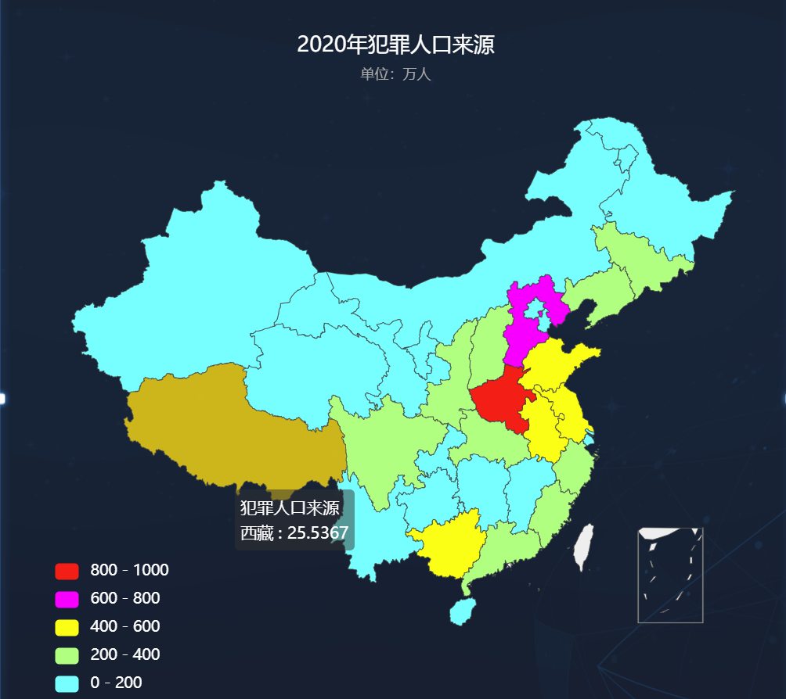
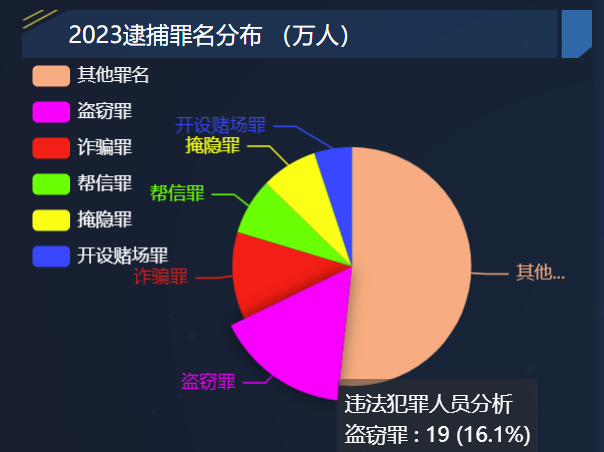
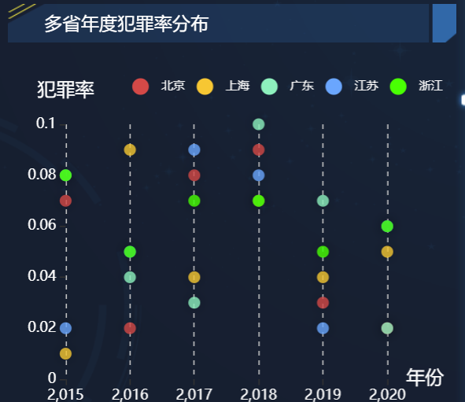
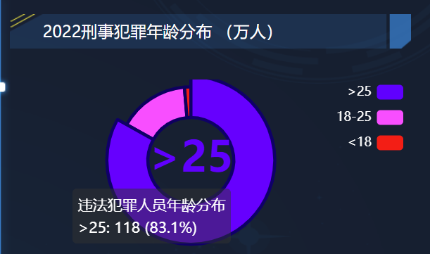
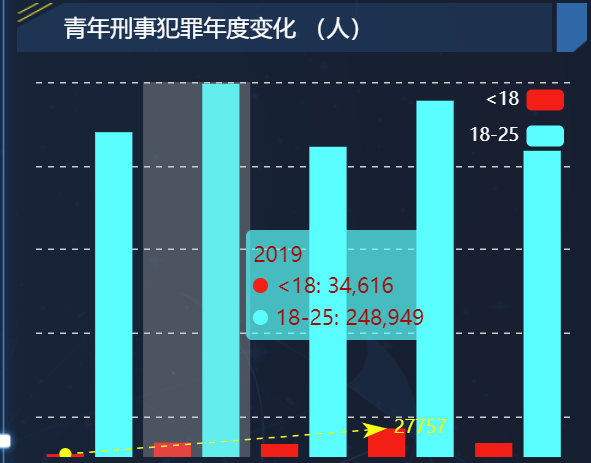
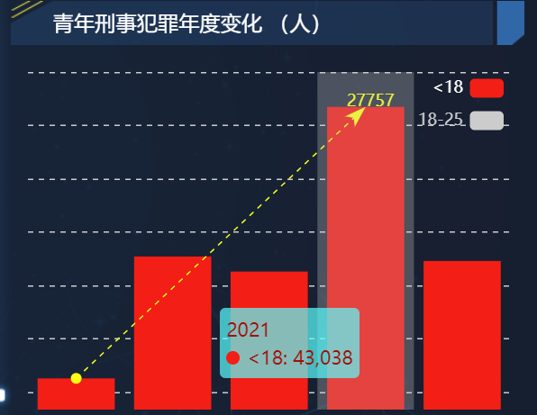
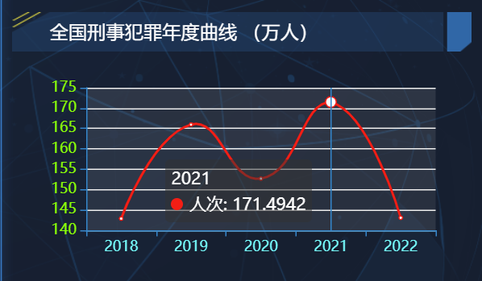

犯罪人口数据监控数据可视化图表与分析
项目背景：
违法犯罪对社会稳定和公共安全构成威胁，随着社会的发展和城市化进程的加速，犯罪问题已经成为影响社会稳定和公共安全的重要因素之一。犯罪行为不仅给人民群众的生命财产安全带来威胁，也严重影响了社会秩序和经济发展。因此，了解和掌握全国犯罪情况的变化趋势、类型分布以及犯罪背后的社会因素成为当务之急。
图1：2020年全国各省犯罪人数

中国地图可以更直观的看出各个省份的犯罪人数是多是少，其中红色表示犯罪人数最多，蓝色表示犯罪人数最少。其中只包含31个省市自治区，未包含台湾省以及周边的岛屿海域。
图2：2023逮捕罪名分布

2023逮捕罪名分布情况，其中，审查逮捕案件中盗窃罪，诈骗罪，帮助信息网络犯罪活动罪（以下简称“帮信罪”），掩饰、隐瞒犯罪所得、犯罪所得收益罪（以下简称“掩隐罪”），开设赌场罪合计占48.4%。审查起诉案件中危险驾驶罪、盗窃罪、帮信罪、掩隐罪、诈骗罪合计占53.7%。
图3：多省年度犯罪率分布

六年间的北京市、上海市、广东省、江苏省和浙江省犯罪率变化，有散点图可看出各省的犯罪率都有一个波动变化，总体来说到2020年各省的犯罪率大致在下降。但也有特例，如上海市的犯罪率一直处于较高的位置，波动变化不是很大，可见经济水平高的地区并不表示其居民素质就较高，反而容易出现动乱。
图4：2022刑事犯罪年龄分布

其中年龄低于25岁的青少年犯罪人数占据了相当一部分的比例，可见对于青少年时期普法以及心理健康教育的重要性。另外犯罪人员的年龄逐年下降，这一趋势变化值得引起国家立法机构的重视。
图5：青年刑事犯罪年度变化

将青年形式犯罪单独分析，不难发现18-25岁之间的青年犯罪人数居高不下，甚至有一段时期增长的趋势。
图6：年龄小于18岁的青年犯罪年度变化

分析年龄小于18岁的青年犯罪人员年度变化，不难看出形势相当严峻，虽然在后期人数有锐减，这或许得益于立法执行的加强或青年总体人数的锐减。但小于18岁的青年刑事犯罪人数从2018年的27757人激增到2021年的43038，这一数据是惊人的，不得不让相关机构和社会各界反思，到底是什么原因导致了这样的悲剧。
图7：2018-2022全国刑事犯罪人数

在2018年到2022年全国刑事犯罪的波动情况，在2019年和2021年出现了一个极大值点的现象，在2021年更是达到了最高峰，我们有理由相信，在全民抗击新冠的时刻，社会监管不可避免地会出现人力不足，监管困难等问题，由此导致犯罪人数增长。有趋势图也可预见，犯罪人数有下降地趋势，但在科学技术高速发展的新时代，人工智能大模型的发展，也为犯罪分子提供了犯罪的便利，由此未来的犯罪人数走势是何形态还未可知。